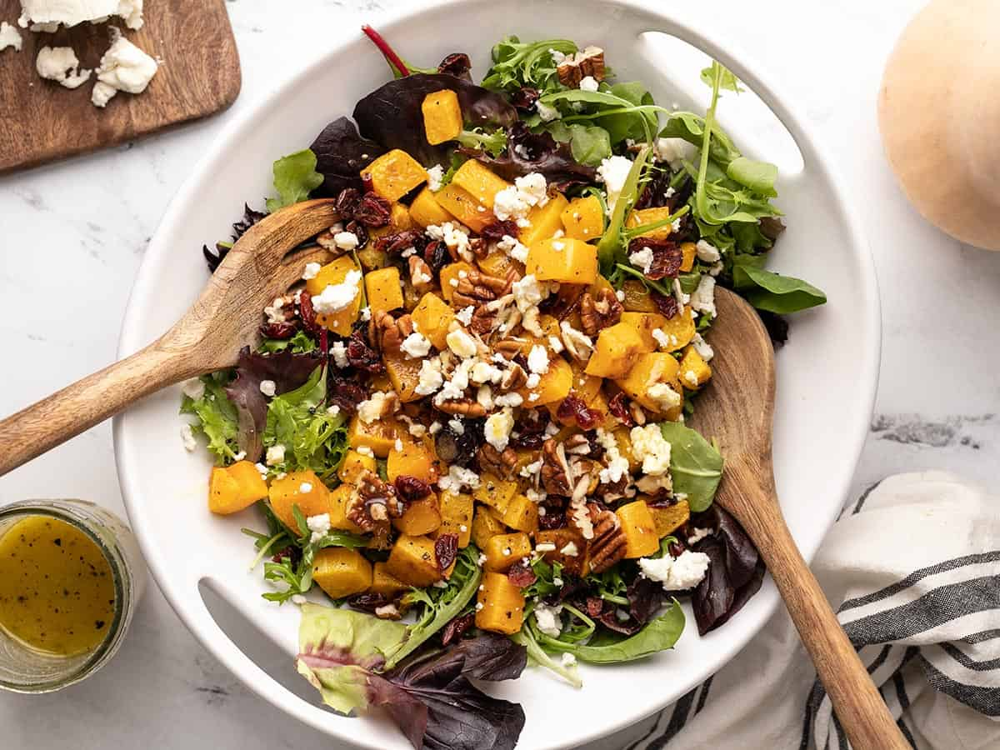

Butternut Squash Salad

Description
This colorful butternut squash salad features roasted butternut squash, tender greens, flavorful toppings, and a maple Dijon vinaigrette.
Ingredients
- 2 lbs. butternut squash ($1.78)
- 1 Tbsp olive oil ($0.13)
- 1 pinch salt ($0.01)
- 1 pinch pepper ($0.01)
Steps
- Preheat the oven to 400ºF. Peel and slice 2 lbs. of butternut squash into ½-inch cubes (about 4 cups cubes).
- Place the cubed butternut squash on a parchment-lined baking sheet, drizzle with olive oil, and add a pinch of salt and pepper. Toss the squash until well coated in oil.
- Roast the squash in the oven for about 30 minutes, stirring once after about 20 minutes of roasting. After 30 minutes the squash should be tender with a little bit of browning on the edges. Allow the squash to cool.
- While the squash is roasting, make the vinaigrette. Whisk together the olive oil, maple syrup, apple cider vinegar, Dijon mustard, garlic powder, salt, and pepper. Set the dressing aside.
When the squash is cool to your liking (you can use it warm or room temperature), build the salad. Place the spring mix on the bottom, then top with the roasted squash, dried cranberries, chopped pecans, and crumbled goat cheese.
- If serving right away, add about half of the dressing and toss to coat. Add more dressing to each serving as needed.